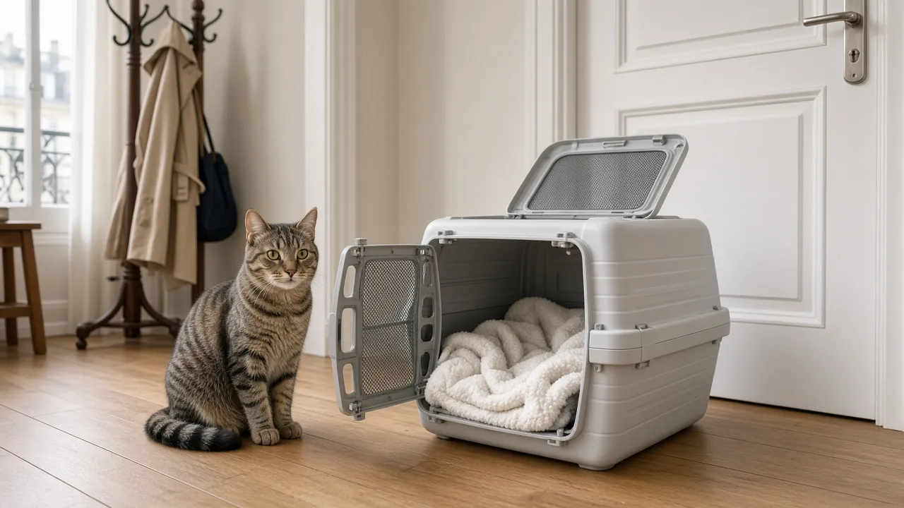
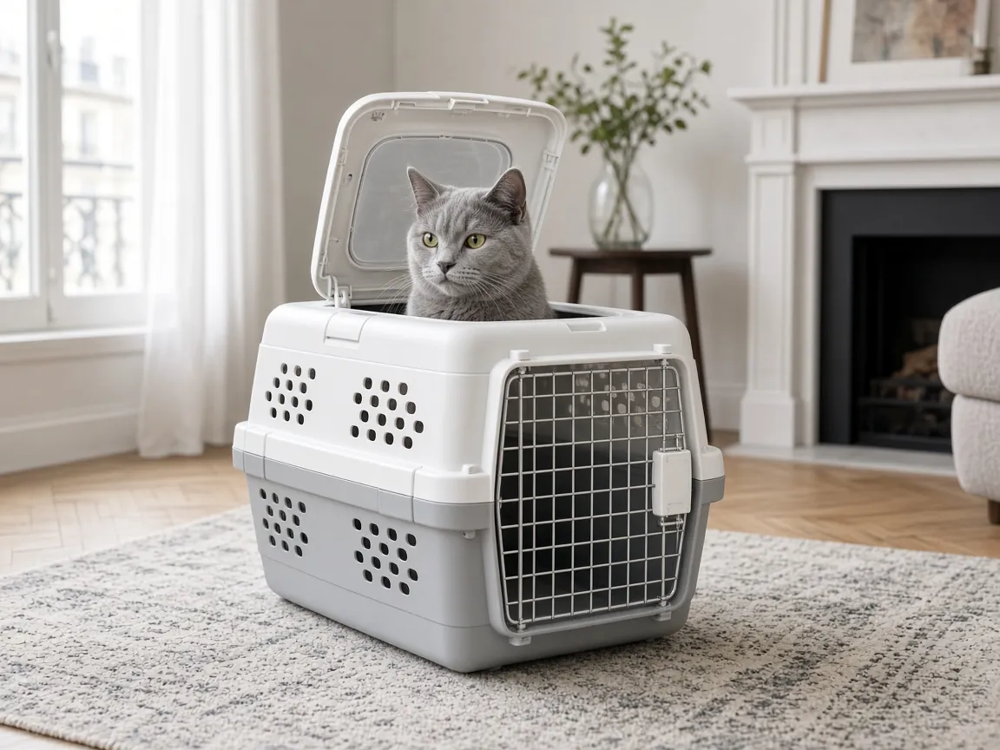
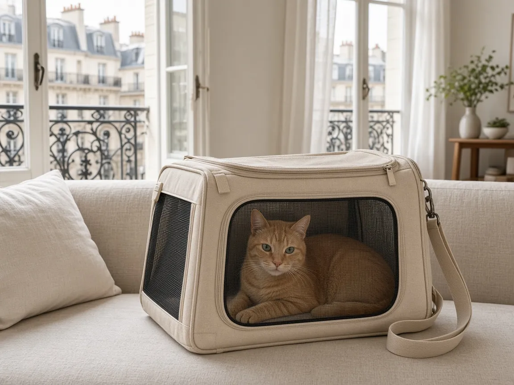
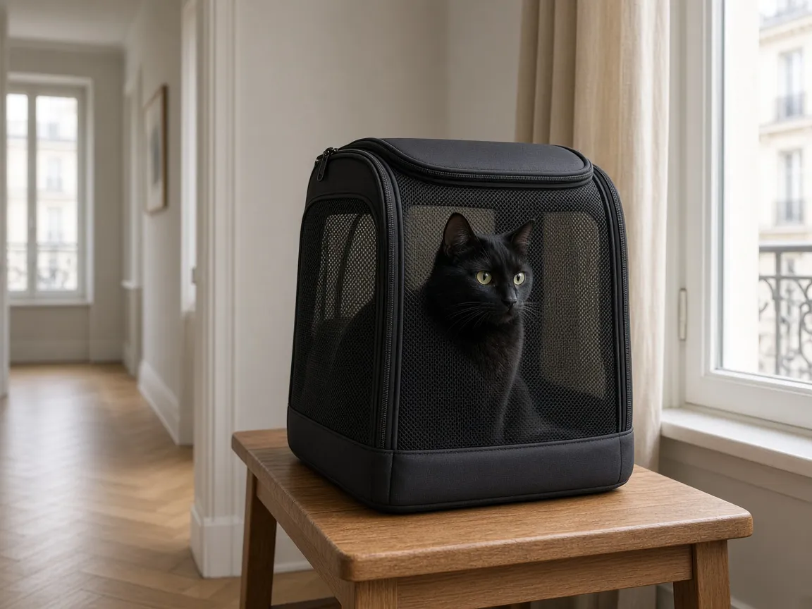

Caisse de transport pour chat : laquelle choisir en appartement ?

Le rendez-vous chez le vétérinaire, un week-end chez la famille, un déménagement : même un chat qui ne sort jamais de l’appartement a besoin d’une bonne caisse de transport. Le plus difficile n’est pas de l’acheter, c’est qu’il accepte d’y entrer sans drame. Voici les trois grands types de caisses et de sacs, comment choisir le bon pour ta vie en ville, et nos astuces pour que ton chat l’adopte.
Comment choisir une caisse de transport pour chat
- Le trajet : en voiture, une caisse rigide et stable est la plus sûre. À pied, en métro ou en bus, un modèle léger avec bandoulière soulage tes bras.
- La taille : ton chat doit pouvoir se tenir debout, se retourner et se coucher. Vérifie les dimensions intérieures et le poids maximal indiqués par le fabricant.
- Les ouvertures : une ouverture sur le dessus permet de déposer le chat sans le forcer par l’avant. C’est un vrai plus pour les chats récalcitrants.
- L’aération et le nettoyage : des grilles ou filets sur plusieurs côtés, un fond étanche et des matériaux faciles à laver en cas d’accident.
- Le rangement : en appartement, un modèle pliable ou empilable se range plus facilement. Mais laisser la caisse en vue aide beaucoup ton chat à s’y habituer.
1. La caisse rigide avec ouverture sur le dessus

La plus sûre pour la voiture et les chats stressés
En plastique solide avec une porte grillagée à l’avant, elle protège ton chat des chocs et ne s’écrase pas. Le modèle avec une deuxième porte sur le dessus change tout : tu déposes ton chat par le haut au lieu de le pousser par l’avant. Le fond se lave facilement et beaucoup de modèles se démontent en deux parties, ce qui permet de garder la moitié basse comme petit couchage à la maison. Elle est plus encombrante et plus lourde à porter à pied.
Voir sur Amazon : caisses rigides2. Le sac de transport souple

Le plus léger pour la ville
En tissu avec des panneaux en filet, il se porte à l’épaule et se replie à plat une fois rentré. C’est le compagnon idéal pour aller à pied chez le vétérinaire du quartier ou prendre le métro, avec un chat plutôt calme. Choisis un modèle avec un fond rigide qui ne s’affaisse pas, des fermetures éclair qui se verrouillent et un tapis amovible lavable. Il protège moins qu’une caisse rigide, donc évite-le pour un chat qui griffe le filet ou panique pendant le trajet.
Voir sur Amazon : sacs souples3. Le sac à dos de transport

Les mains libres pour les trajets courts
Il répartit le poids sur les deux épaules et te laisse les mains libres, pratique dans les escaliers sans ascenseur ou à vélo. Les versions avec côtés en filet sont plus aérées que les modèles à hublot fermé. Il convient à un chat calme, déjà habitué à être transporté, et à des trajets courts. Vérifie qu’il a une base stable pour le poser au sol et une attache intérieure à fixer au harnais.
Voir sur Amazon : sacs à dosQuel modèle pour quelle situation ?
| Situation | Modèle conseillé | Pourquoi |
|---|---|---|
| Trajet en voiture | Caisse rigide | Stable, résistante, facile à caler |
| Chat stressé ou récalcitrant | Caisse rigide avec ouverture sur le dessus | On le dépose par le haut sans le forcer |
| À pied ou en métro avec un chat calme | Sac souple à bandoulière | Léger, se range à plat |
| Escaliers, vélo, trajets courts | Sac à dos en filet | Mains libres, poids réparti |
Nos astuces pour que ton chat accepte sa caisse
- Laisse la caisse ouverte dans une pièce où il vit, avec un plaid qui porte son odeur. Elle ne doit pas sortir du placard uniquement les jours de rendez-vous.
- Glisse des friandises ou un jouet dedans de temps en temps pour qu’il y entre de lui-même.
- Entraîne-le par étapes : porte fermée quelques secondes, puis quelques minutes, puis un petit tour dans l’appartement.
- Pendant le trajet, tiens la caisse à deux mains contre toi plutôt que par la poignée, pour limiter les balancements.
- Couvre une partie de la caisse avec un tissu léger si ton chat est plus calme quand il ne voit pas tout autour de lui.
Quel budget prévoir ?
Une caisse rigide simple ou un sac souple restent en général les options les plus abordables. Les sacs à dos et les caisses avec plusieurs ouvertures coûtent un peu plus. Les prix changent souvent, vérifie-les sur la page du vendeur.
FAQ
Mon chat déteste sa caisse de transport, que faire ?
Laisse la caisse ouverte en permanence dans le salon, avec son plaid et quelques friandises dedans. Quand elle fait partie du décor et n’annonce plus forcément un trajet, la plupart des chats y entrent plus facilement. Fais ensuite de courts essais porte fermée, puis de petits trajets dans l’appartement.
Caisse rigide ou sac souple, que choisir ?
La caisse rigide protège mieux et se nettoie facilement : c’est le choix le plus sûr pour la voiture et pour un chat qui panique. Le sac souple est plus léger et plus agréable à porter à pied ou en transports en commun, mais il convient surtout à un chat calme.
Quelle taille de caisse pour mon chat ?
Ton chat doit pouvoir s’y tenir debout, se retourner et se coucher en boule. Prends les mesures de ton chat et compare-les aux dimensions intérieures indiquées par le fabricant, ainsi qu’au poids maximal conseillé.
Un sac à dos de transport est-il adapté à tous les chats ?
Non. Il est pratique pour un chat calme et habitué, sur des trajets courts à pied ou à vélo. Pour un chat stressé, lourd ou pour un long trajet en voiture, une caisse rigide reste plus rassurante et plus stable.
Comment installer la caisse dans la voiture ?
Pose-la au sol derrière un siège avant, ou attache-la avec la ceinture de sécurité si le modèle le permet, pour qu’elle ne glisse pas au freinage. Ne laisse jamais ton chat seul dans une voiture garée.
Notre avis
Si tu ne dois en avoir qu’une, prends une caisse rigide avec ouverture sur le dessus : c’est la plus polyvalente, de la voiture au rendez-vous chez le vétérinaire. Si tu fais tout à pied ou en transports avec un chat calme, un sac souple sera plus agréable à porter. Le sac à dos est un bonus pour les trajets courts. Pour le reste de l’équipement de base, vois notre checklist équipement chat d’appartement.
Liens affiliés Amazon : une commission peut être versée, sans surcoût pour toi.